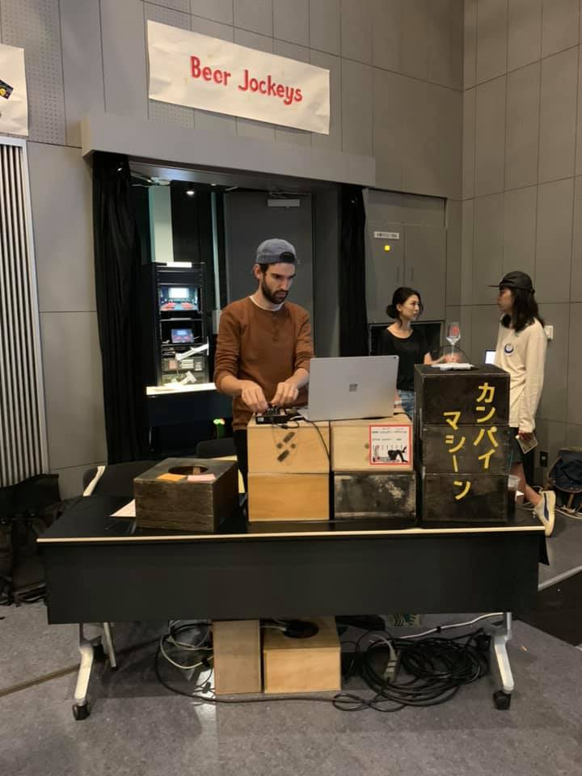
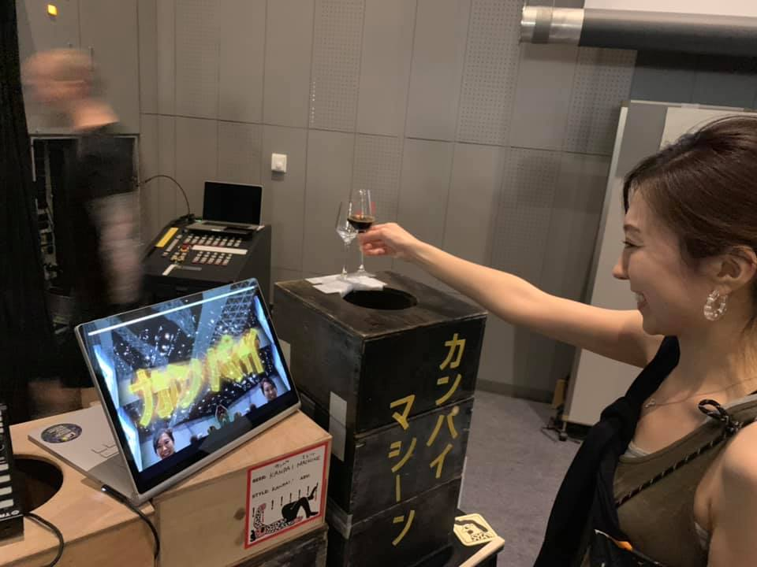

After a chance meeting at an 8 seat pop up cocktail event on a Tuesday night in a sleepy part of Tokyo, I managed to snag a new VJ gig. An unconventional gig, but one that promised a fun challenge and the incredible perk of free flowing elixir from some of the best breweries from around the globe.
Mikkeller went the unconventional route and held their 2019 beer festival inside of a sparkling concert venue in one of the new Shibuya highrises. The goal was to create a unique atmosphere that combined a "neo-tokyo" vibe with typical beer festival antics. And one cornerstone of the "neo-tokyo" was set to be some wild visuals (but not too trippy as to compound any dizziness).
Assembling a team was quick and easy. Many of the colleagues on my team moonlight as VJs, and no one could resist the promise of free beer. I onboarded three members, and we agreed to each design a beer themed set. The venue had a giant 20x12 meter screen on the top floor and high lumen projector, and so equipment reduced down to just bringing our computers, a few cables, and a hdmi switcher -- the simplest kind of "install".
Designing the effects was a blast. I created three main set-pieces; the first used the print and promotion materials to create few-frame sheet animations and then layered a voronoi shattering effect on top. The second scene was clips of an assortment of characters from old Japanese beer commercials drinking beer that were synchronized to the beat. The clips were then projected onto a huge field of cubes that rotated as the camera zoomed, panned, and spun about. And the third was 3d bar tap covered in decals of the logos of all participating breweries that began to emit streams of beer. All effects were quite a laugh.
But the best decision I made was to persuade the organizer to give us a booth inline with the rest of the breweries which put us on the ground level where the action was. That way we could set up our table as if we were a brewery, but instead of beer we would have stacks of laptops. And curious guests could stop and chat with us about the how and the what of the visuals.
But having a booth gave me the idea of figuring out a better way to allow festival goers to interact with the content. After a few brainstorm sessions with my girlfriend (who studied product design), we came up with an idea of creating a Kanpai Machine -- a machine or thing that after you cheers'd it there would be some effect. In keeping with the retro-future theme, I hooked up a webcam and overlaid an overdone kaban effect of "カンパイ" ontop of a live camera feed of the cheerser. Then, as a basic way to detect when the kanpai happened, I hooked up a leap motion with the idea of tracking if a hand was beyond a certain threshold.
After some glue mishaps discoloring and completely ruining a plastic keg, we built the Kanpai Machine out of some wood blocks with holes cut through their center. We affixed a beer glass to the top with lots and lots of tape to withstand the reckless cheersers. I stuck the leap motion in the hole, and unfortunately the limited range of view and also the frequent stream of hands led to slow and unstable tracking. So I switched to use just the grayscale feed, cropped out the center region, and detected when the average brightness passed a certain threshold (signaling a hand or other object was over the opening). That worked surprisingly well, and even accounted for increasingly unsteady hands as the event wore on.
The festival lasted two days with two sessions each day. Speaking with inquisitive guests, getting a kick out of people getting a kick out of the Kanpai Machine, watching people mesmerized by the visuals (which I half attribute to their quality, and the other half to inebriation), and sampling many, many beers led to a great weekend. The strangest moment was being berated by a teetering participant who demanded I pour him beer, accusing me of being a cheat after I tried again and again to explain there was no beer here and that I was conducting the visuals. I suppose that was the small cost of wanting a booth.
Plans are to return to the venue with some new visuals for the festival next year. I am already thinking about better booth additions that can engage guests with the visuals. Maybe already time to start building Kanpai Machine V2...